The Kingdom of Paphlagonia
2026-11-09 · ahowl11
Disclaimer - This Dev diary was written by @Mausolos of Mylasa our lead historian, I am simply posting it. All screens are taken by the wonderful @Vas
Chairete, philoi! We return once more to Anatolia, and to a faction which has already acquired legendary status among RIS players: The Kingdom of Paphlagonia. Paphlagonia is located in northern Asia Minor, on the coast of the Black Sea between Bithynia and (Cappadocia on the) Pontos. In the 2nd millennium BC, the Hittites called this land Palā, and its inhabitants, the Palaeans, spoke their own language, the precursor of Paphlagonian. Like the Hittites and the groups that spoke Luwian (like Lycians or Carians), they had migrated here in the third millennium BC and met the hostile native Kaskians. The Kaskians may have played a role in the downfall of the Hittite Empire, but their distinctive culture also disappeared from the records in the following centuries. Kaskians and Palaeans may simply have fused to form the Paphlagonian ethnic group (cf. Sasson, Civilizations of the Near East vol. 9 (1995)).
By the 7th century BC, Greek colonisation reached the region. Milesians settled in Sinope on the Paphlagonian coast and also set up several minor cities. Paphlagonia largely escaped the Persian conquest, with only the southernmost part being annexed by the Achaemenids. Politically, it was a scattered landscape, with isolated communities and few cities. And yet, Paphlagonia had a kingdom that had survived since the beginning of civilisation, and would persist even under the Roman empire: The realm of the monarchs of Gangra. Nestled into the mountain chain of southern Paphlagonia and dominating a valley 800m above sea level, it was probably already the capital of the Paphlagonian kingdom in the 2nd millennium BC. In the Iliad, king Pylaimenes and his men were loyal allies of the Trojans, and when the Danaians, the Greeks, came to besiege the city and bring back Helen, they marched to the defence of Ilion (Hom. Il. 5.576). Pylaimenes led a group called the Eneti, but it is unknown if they had anything to do with the Veneti, after whom Venice and Venetia are named. Oddly, Pylaimenes is eventually slain in the Iliad but later reappears to mourn the death of his son. This was probably a mistake in the composition of the work rather than a king reborn (Hom. Il. 13.643-658; Porphyr. Hom. Il. 5.695.1-2), but he was still reborn in a different way: Many later Paphlagonian kings are also attested to have worn the name Pylaimenes. Their realm around Gangra, hidden in the mountains and without great riches, survived the Lydian and Persian periods, probably as vassals of the Great Kings, and still existed in 270 BC. Most of these rulers were called Pylaimenes, and hence Paphlagonia started under a Pylaimenes in the RIS campaign (cf. Manodelakis, Politics and Diplomacy in Paphlagonia (2019), p. 221).
Obverse of a coin of a Paphlagonian king Pylaimenes, late 2nd century BC
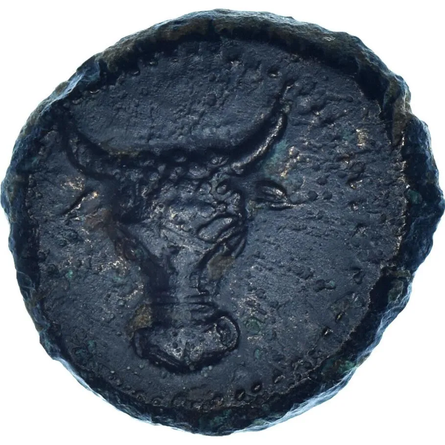
His (possible) grandson Morzios I would leave the Paphlagonian shell in the early 2nd century BC and partake in Asian affairs: After the Roman victory over the Seleucids at Magnesia in 190/189 BC, the consul Gnaeus Manlius Vulso invaded Galatia since the Celts had fought for the Seleucids. Paphlagonia had possibly been a dependency of the Galatians since their arrival in the 270s, though it seems that they had not suffered any direct incursions or interventions. Yet, Morzios now readily dispatched troops to aid the Galatians who defended the Asian Mount Olympos (Liv. 38.26.4). The Romans won the battle and the campaign, but neither Galatia nor Paphlagonia were dissolved: instead, the Romans preferred to keep these states alive to be able to heap pressure on their powerful allies, the Attalids of Pergamon, whenever they needed it.
Morzios soon faced another challenge: A Gaul by the name of Gaizatorix (Leader of the Gaisates), who had erected a principality in western Paphlagonia, invited Pharnakes the king of Pontos, to attack the Paphlagonian kingdom. The king had just captured Sinope and made it the new capital of his realm and was ambitious to expand his influence further (Strab. 12.3.11). The royal forces thus invaded the interior of Paphlagonia, plundered farmsteads, captured forts and weapon depots and abducted many peasants and their families to sell or use them as slaves (Polyb. 25.2.9). Morzios' army apparently retreated behind the safe walls of Gangra and Pharnakes did not dare to attack the capital directly. At the same time, Pontic troops captured Tieion on the Paphlagonian coast and raided northern Cappadocia.
View of Çankırı, modern Gangra
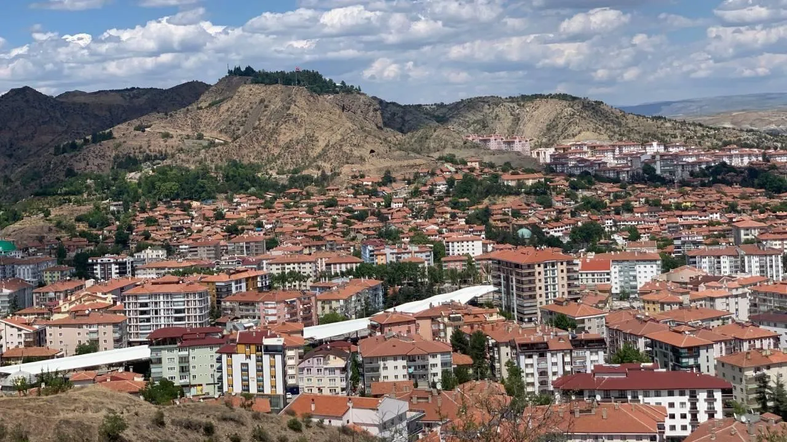
Soon, however, Eumenes II of Pergamon and his brother (the future Attalos II) returned from a diplomatic trip to Rome and they were incensed about what had happened. The Attalids gathered their forces, sent words to their allies and promised to bail out Morzios and his Paphlagonians. Gaizatorix and another Galatian dynast, Cassignatus, heard these news and now claimed that Pharnakes was a threat to them and they asked for the protection of Pergamon. Attalos was irritated by their pleas and ignored them, instead uniting his army with that of Ariarathes IV of Cappadocia near the Halys river (Olshausen, Eckart, s.v. Pharnakes I., in: DNP Brill). At this point, envoys from Rome arrived to arrange peace between the two parties. However, the following negotiations failed miserably. Though Eumenes had to leave the warzone for a while to support his Rhodian allies in suppressing a revolt of the Lycians, by 179 BC, the Attalid-Cappadocian alliance, supported by Rhodes, Herakleia Pontike, Chersonesos and Kyzikos, had won a string of victories. Paphlagonia was freed and Pharnakes had to give in. In the peace treaty, he promised to hand back all the captives, civilians as well as soldiers, all the booty and the weapons he had stolen from Paphlagonia to Morzios (IOSPE I² no. 402; ll. 1-32).
Morzios also gained the territory around Krateia west of Gangra either through the treaty or shortly thereafter, possibly from Gaizatorix (Strab. 12.3.41). He ruled until his death until Mithridates VI replaced the dynasty and made Paphlagonia part of his realm (Iust. 37.4.8). When Pompey ultimately defeated Mithridates and reorganised the East, he re-established another Pylaimenes in Paphlagonia (Strab. 12.3.1). Antony later made the Galatian tetrarch Kastor king of Paphlagonia (Cass. Dio 48.33.5), and his son, Deiotaros, would inherit Paphlagonia and rule there until his death in 6 AD (Marek, Geschichte Kleinasiens (2010), p. 405). What happened to the native dynasty is unclear. Perhaps Greeks, Romans, and history had simply forgotten about the Paphlagonian kingdom at Gangra.
Rock grave in the mountains of Gangra, Paphlagonia
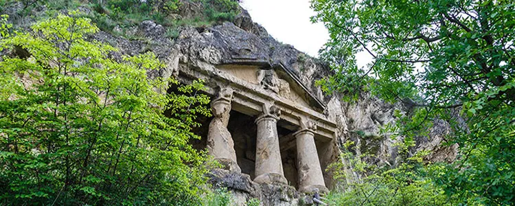
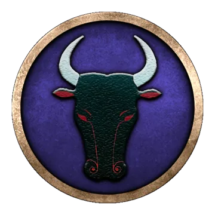
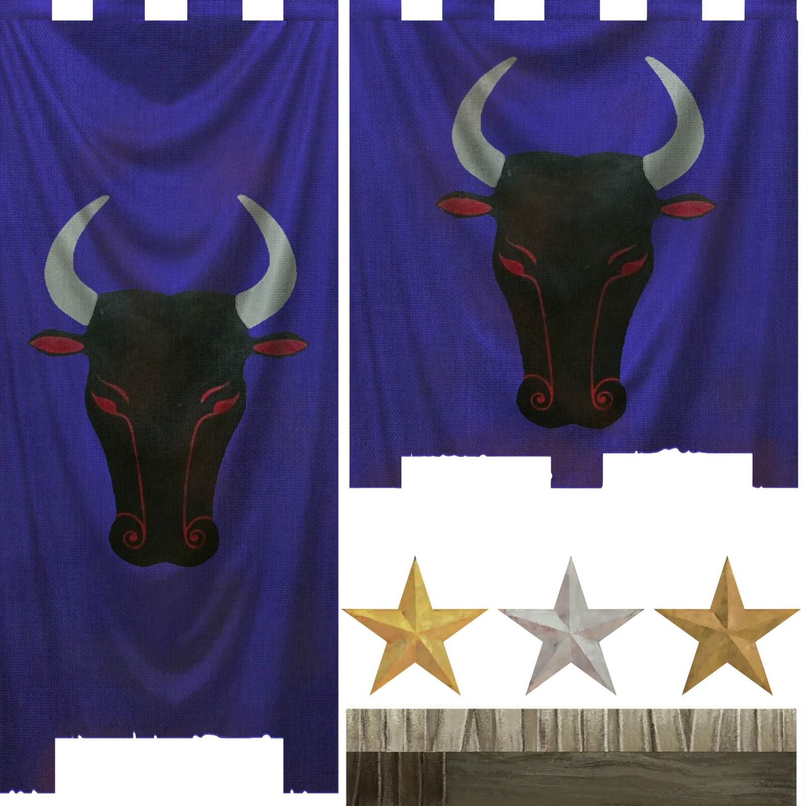
The starting position of the Kingdom of Paphlagonia
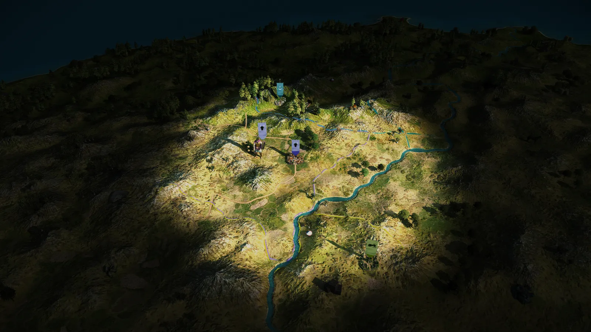
"The Paphlagonians in the army had woven helmets on their heads, and small shields and short spears, and also javelins and daggers; they wore their native shoes that reach midway to the knee." Herodotus, Histories 7.72. As you can see, the Paphlagonian Javelinmen are based on the description by Herodotus
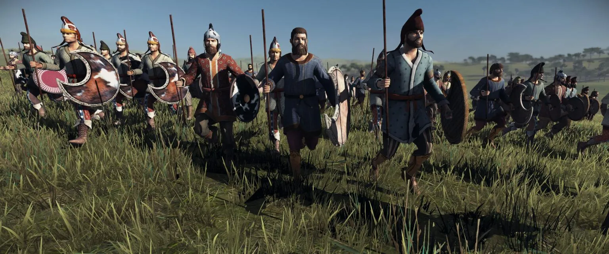
Paphlagonian Light Infantry is a melee variant of the skirmishers.
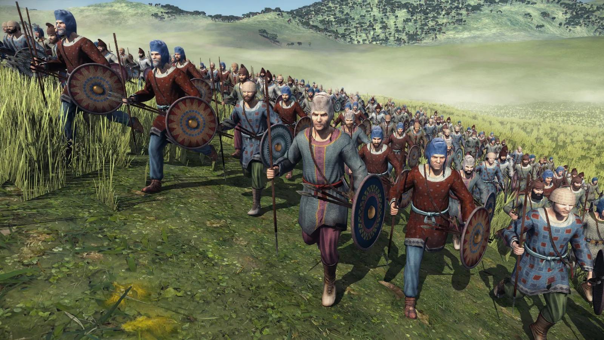
Xenophon (Hell. 4.1.13) mentions that King Otys of Paphlagonia supported Agesilaos of Sparta with "a thousand horsemen and two thousand peltasts" during his campaigns in western Asia Minor in the early 4th century BC
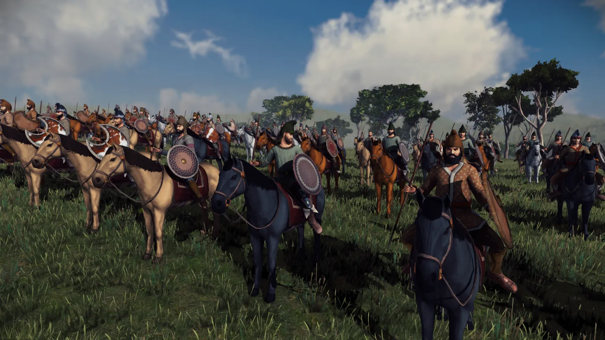
Paphlagonian slingers are based on the lead bullets found near Yozgat and now in the Yozgat Museum, which lies on the border of ancient Paphlagonia and Cappadocia. The clothes are typically Paphlagonian. They are a great unit, believe me, really great.
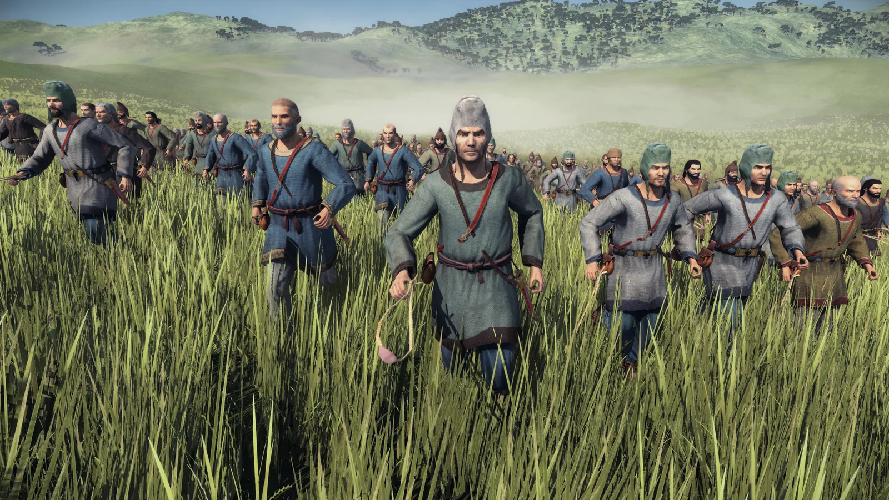
Paphlagonian Levy Spearmen are your main melee unit and also amazing. They are largely based on Herodotus as well, who has one sentence about the equipment, which we could easily split into several units.
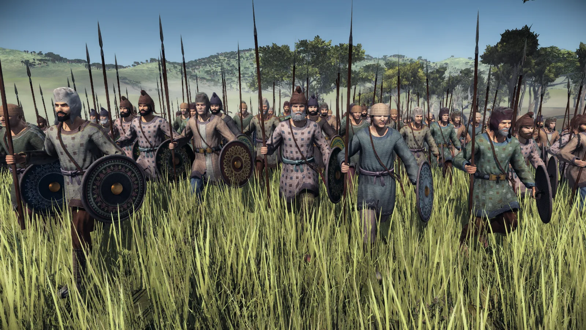
Paphlagonian Light Cavalry is also based on a stele from the Yozgat Museum (as discussed for the Cappadocian light lancers). They are your primary shock cavalry unit, and shockingly bad... erm good.
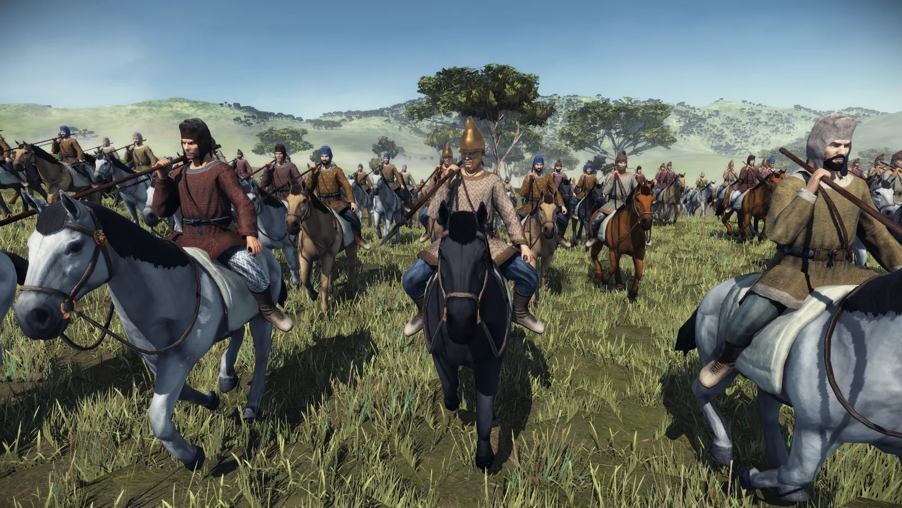
The Masdyenians were a Paphlagonian community whose men had probably fought together with the Attalid forces during the rule of Morzios. Some of them stayed in Pergamon and later acquired citizenship there (OGIS i338, l17). Due to the exchange with and influence from Pergamon, they are a bit heavier armed and all wear linothorakes.
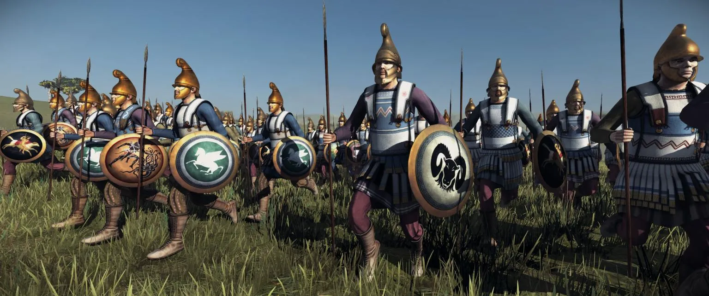
Paphlagonian Skirmisher Cavalry is similarly armed like the javelinmen and also inspired by Herodotus and Xenophon. They are probably your best unit and actually praised by some ancient authors.
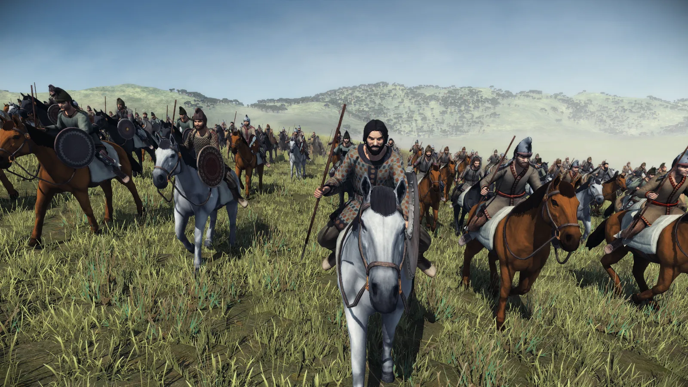
The general's bodyguard is also a skirmisher cavalry unit and therefore extremely effective in... nothing. Enjoy playing as Paphlagonia, it will be tough.
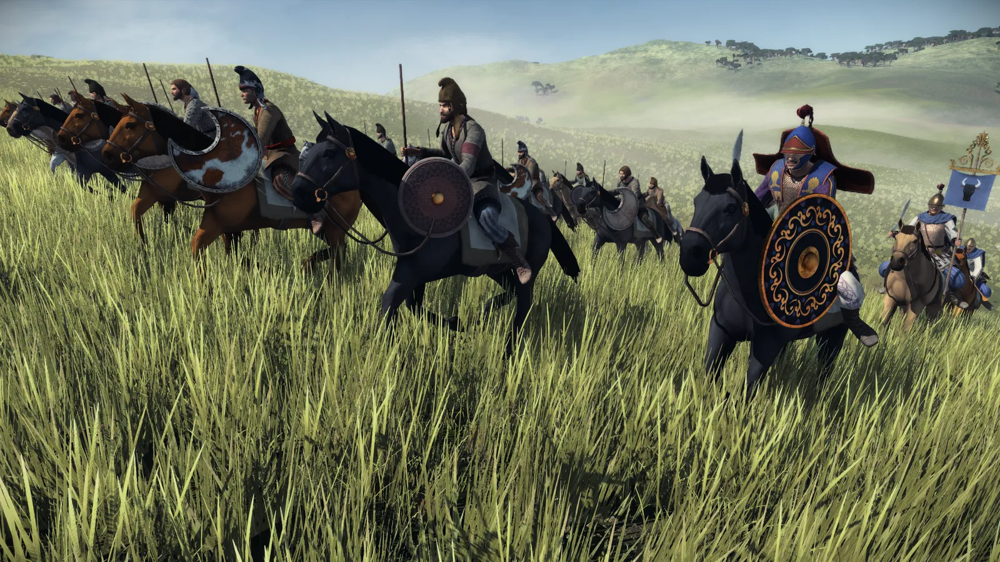
Now for some action shots!
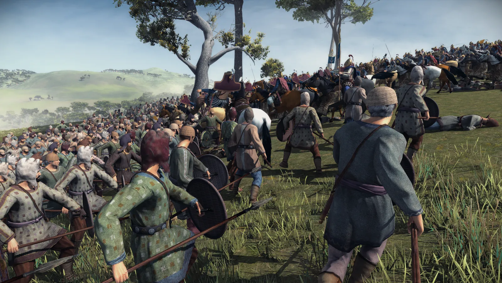
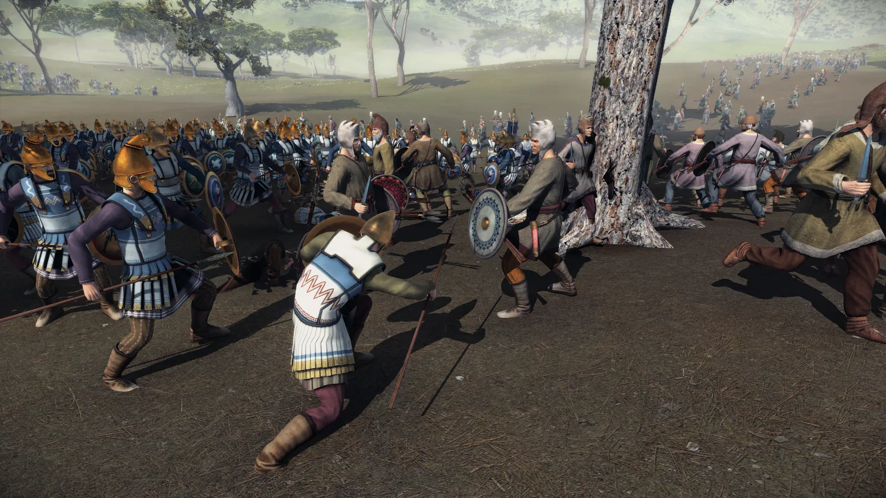
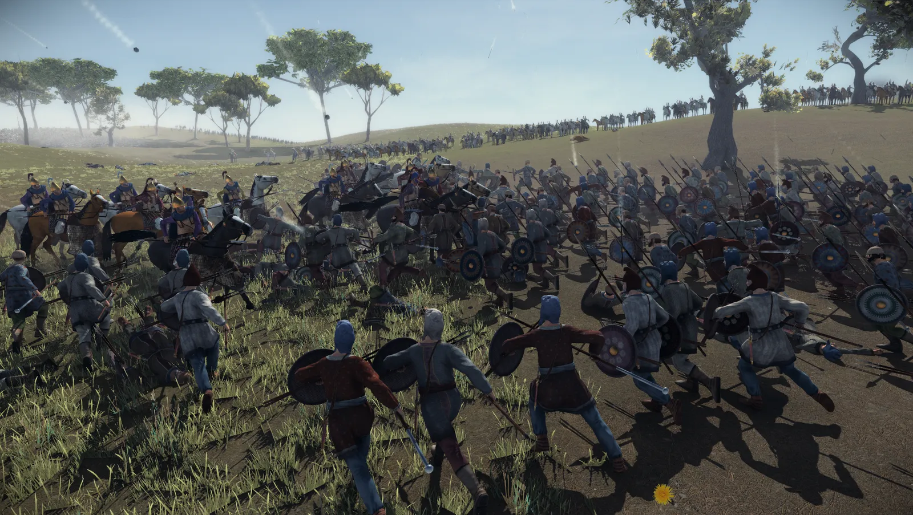
This concludes our Developer Diary for today! (Start here: https://discord.com/channels/714205632663912498/894286297802362931/1569355773518282936) Discuss your thoughts and questions in a channel and see you next time!